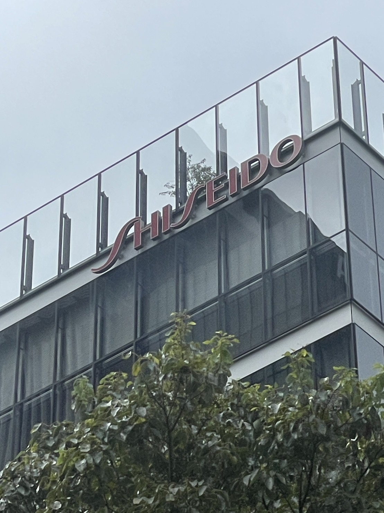
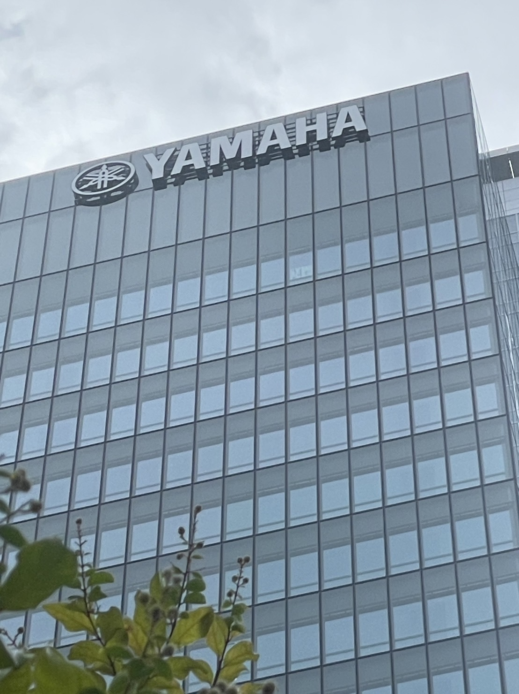

町中の看板・サイン
1.ディズニーの関係者専用扉のサイン


ディズニーランドにあるアトラクション
「美女と野獣魔法のものがたり」の並び列にあるキャスト専用の扉です
基本は「staff only」や「関係者専用」などですが
このアトラクションのサインは
「castle staff only」
となっています。
ここのキャストがこのお城に使える使用人だというところからこのサインになっているのだと思います。
2.ポケモン世界大会

今年の夏にポケモンの世界大会がみなとみらいで行われた時の
みなとみらい駅の駅名表示の看板
3.企業ロゴ


横浜駅からみなとみらいキャンパスにむかう途中にある企業のロゴ
それぞれの字体、や色でつくられている
光る